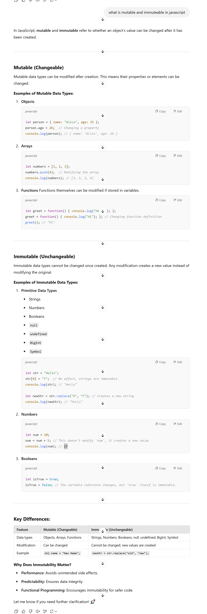

Mutability refers to data types that can be accessed and changed after they've been created and stored in memory. Immutability, on the other hand, refers to data types that you can't change after creating them – but that you can still access in the memory.
If a data type is mutable, that means that you can change it. Mutability allows you to modify existing values without creating new ones.
By default, reference data types are mutable. Reference data types consist of Functions, Arrays, and Objects.
more about mutability and immutability
